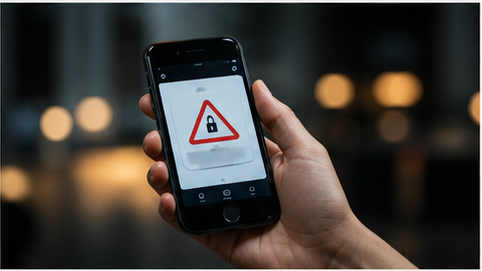
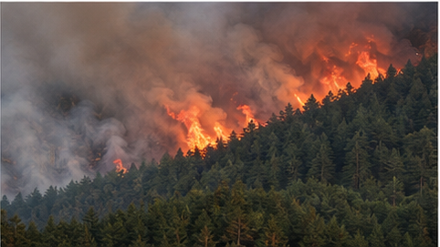

국회 표결 이후 남은 세 가지 쟁점
찬반 주장보다 표결 전후로 바뀐 절차와 근거를 먼저 정리합니다.
홈에서는 듣고 싶은 에피소드를 고릅니다. 하단 재생바를 누르면 대사, 출처, 다음 재생, 재생 설정이 아래에서 올라옵니다.
최근 들은 주제와 저장한 이슈를 섞어 중복을 줄였습니다.

찬반 주장보다 표결 전후로 바뀐 절차와 근거를 먼저 정리합니다.
발표문, 시장 반응, 기사 속 전망 수치를 분리해서 듣습니다.
현장 보도, 정부 발표, 국제기구 자료의 차이를 구분합니다.
지원 대상, 신청 기간, 언론 보도와 공고문의 차이를 묻고 답합니다.
큰 사건, 선거, 정책 논쟁은 하나의 시리즈로 묶입니다.

여론조사, 공약 재원, 투표 절차, 선관위 발표를 에피소드별로 나눠 추적합니다.
정치, 경제, 해외, 생활을 듣는 목적에 맞춰 묶었습니다.
관심 이슈와 공식자료 업데이트를 묶은 개인화 오디오입니다.
재생 진행에 맞춰 현재 발화가 강조됩니다.